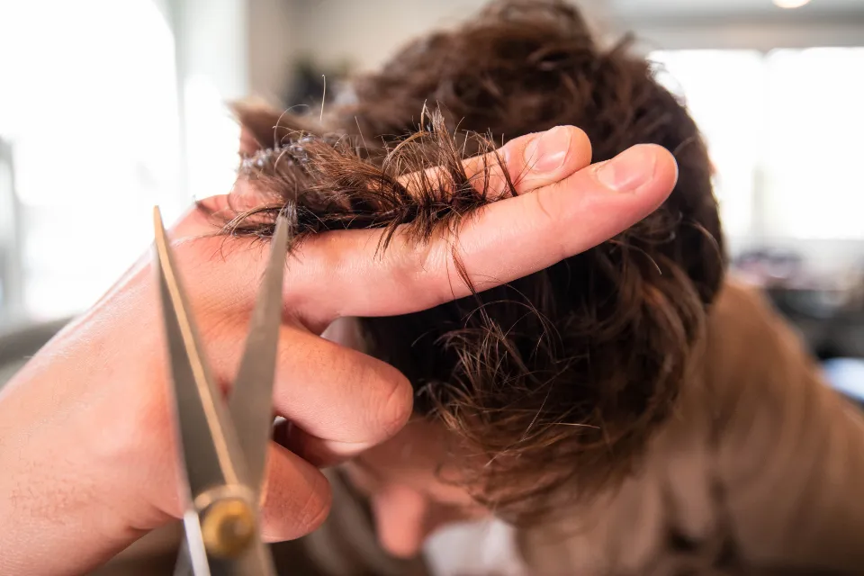
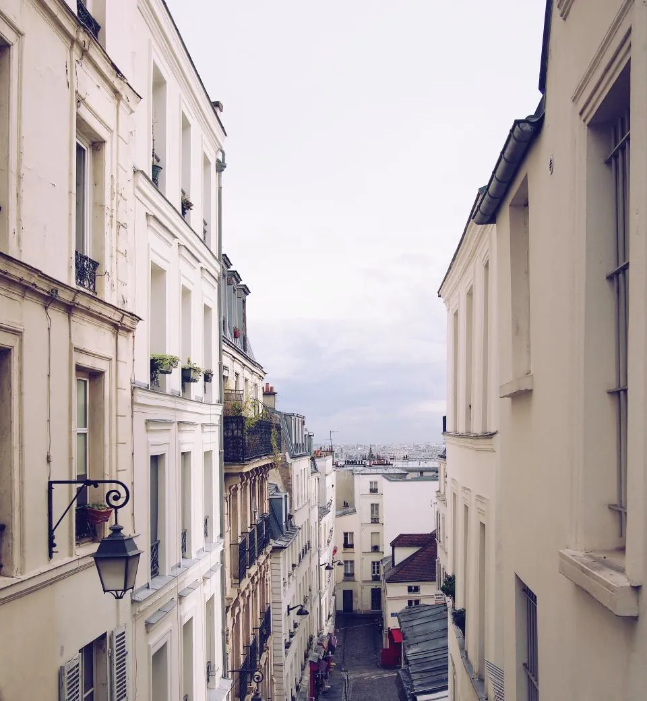

Observer
Morphologie du visage, racines, nature du cheveu. Puis une proposition de coupe, et toujours un moment pour y réfléchir.
Atelier de coupe · Paris 12e
L'atelier de Loïc Chevert, à une minute de Nation. Des coupes aux ciseaux qui se replacent seules, sans brushing.

Le coupeur lit la nature du cheveu, son implantation et la forme du crâne. Puis il décide du volume et de la longueur justes. Une lignée de coupeurs, jusqu'à l'atelier.
Père des coupeurs. Il invente l'architecture de la coupe.
Crée la première académie de coupe en France.
Directeur artistique et formateur chez Jean-Louis Déforges.
Loïc ouvre son atelier de coupe, à deux pas de la place de la Nation.

Pas de book photo, pas de coupe standard. Le concept Coupe Art part de vos cheveux, dans cet ordre.
Chaque cheveu a sa nature, sa direction et sa densité.On travaille avec le potentiel de la chevelure, pas contre lui, pour un résultat harmonieux et durable.
Le sens de pousse décide où la coupe tombe.La structure des coupes concept garde son équilibre en repoussant. Vos cheveux repoussent en liberté.
Le visagisme vient en troisième.Il accentue vos atouts naturels sans dicter la coupe. L'essence de la chevelure reste prépondérante.
Une coupe qui se reconnaît après le premier shampoing, et à la façon dont elle évolue dans le temps.
Morphologie du visage, racines, nature du cheveu. Puis une proposition de coupe, et toujours un moment pour y réfléchir.
Shampoing, soin et massage. Quelques minutes de détente avant le changement, pour laisser partir l'appréhension.
Rigueur, concentration, précision. Chaque étape vous est expliquée pendant que la coupe se construit.

Quelques minutes, sans brushing. Le geste simple que vous referez chez vous, avec ou sans sèche-cheveux.
Faites glisser pour voir les quatre temps.
Art Director · Coupeur
32 ans d'expérience, dont 18 comme directeur artistique et formateur chez Jean-Louis Déforges. Il imagine votre coupe d'après la texture, l'implantation et votre style.
Art Stylist · Coupeur
Formé à l'Académie Jean-Louis Déforges en 2011, puis entièrement par Loïc. Le premier coupeur formé 100 % Coupe Art.
Art Coloriste
27 ans de couleur, dont 13 dans l'univers d'Alexandre Zouari. La couleur pensée comme une signature, en harmonie avec la coupe.
Toutes les coupes comprennent shampoing, massage, coupe et séchage. Choisissez votre coupeur pour voir le prix.
Prix TTC, service compris.
« Chaque mèche a non seulement la longueur optimale mais adopte aussi le mouvement qui lui convient parfaitement. »Témoignage client, publié sur le site Coupe Art
« J'ai retrouvé un rendu naturel, sans avoir à faire quoi que ce soit, avec en bonus un gain de temps énorme au quotidien. »Témoignage client, publié sur le site Coupe Art
« L'ambiance est familiale, conviviale, presque comme une deuxième maison. »Témoignage client, publié sur le site Coupe Art
Une ou plusieurs prestations en carte cadeau, pour faire découvrir ce qu'est un coupeur.

Une petite rue calme et privée, à une minute de la place de la Nation. Une enseigne de coiffure depuis plus de 100 ans.
22 rue des Colonnes du Trône
75012 Paris